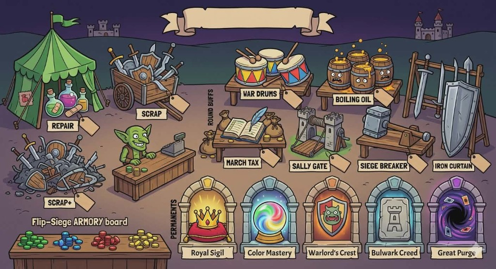

You + ally AI vs two enemy AIs. Official rules — Stash, card cooldown, ~50% games end round 4 / ~50% round 5+.
Card cooldown (official): cards played to tricks rest next deal (up to 10 per team), then return.
Siege with monsters face-up, defend with towers. Off-color → Stash. 2 Armory buys per round.
Full rulebook (print-friendly) · Play stats dashboard
—
